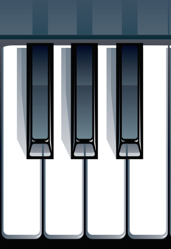

<nz-layout class="layout">
  <nz-header>
    <div class="logo">Piano Online</div>
  </nz-header>
  <nz-content>
    <div class="inner-content">
      <div class="centrar">
        
        <map name="teclado"
          ><area
            (click)="sonido(1)"
            shape="poly"
            coords="6,94,53,95,52,324,86,324,80,489,80,489,6,488,5,93,5,96"
          /><area
            (click)="sonido(2)"
            shape="poly"
            coords="88,323,109,321,110,92,110,92,143,93,143,93,143,323,170,323,166,484,88,483,88,483,86,321"
          /><area
            (click)="sonido(3)"
            shape="poly"
            coords="200,92,237,94,234,324,256,324,252,485,172,485,173,320,200,323,199,91"
          />
          <area
            (click)="sonido(4)"
            shape="poly"
            coords="292,93,339,90,337,487,261,484,260,320,292,323,291,89"
          /><area
            (click)="sonido(5)"
            shape="rect"
            coords="55,89,103,317"
          /><area
            (click)="sonido(6)"
            shape="rect"
            coords="145,89,190,315"
          /><area (click)="sonido(7)" shape="rect" coords="240,88,286,317" />
        </map>
      </div>
    </div>
  </nz-content>
  <nz-footer>Ant Design ©2020 Implement By Paul Vizuete  <a href="https://siro.ec" target="_blank">https://siro.ec</a></nz-footer>
</nz-layout>
